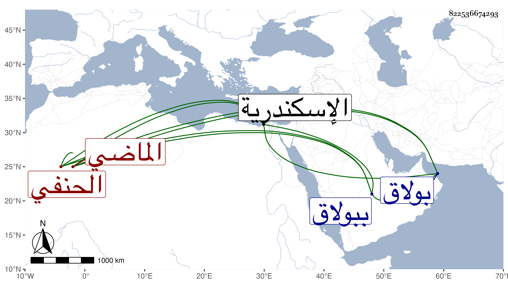

0902Sakhawi.DawLamic.ITO20230111-ara1.EIS1600.822536674293
Biography ID: 822536674293
261
زينب ابنة العلاء على بن العالم البدر محمد الحنفي الماضي أخوها خليل وجدهما وتعرف بابنة ابن خاص بك . تزوجها اينال الأجرود في إمرته في حدود سنة خمس وعشرين وثمانمائة بعد أخت لها ماتت تحته ولم ينفك عنها ولا بعد تملكه حتى مات ولم يتزوج عليها بل ولا تسرى وكل أولاده المؤيد أحمد وغيره منها بحيث انفرد عن سائر الملوك بذلك كما انفردت هي عن سائر الخوندات بالمزيد من نفوذ الكلمة ووفور الحرمة وطواعية السلطان جدا لأوامرها حتى كان لا اختيار له معها ، وحجت في أيام عزها فكان أمرا زائدا على الحد وعوفيت من مرض مرة فطلعت من بيتها ببولاق إلى القلعة في محفة وكل من ولدها وصهريها الداودار الكبير والثاني والزمام والخازندار بحواشيهم وغيرهم أمام محفتها وآخرون من الخدام والخدم والمماليك بجوانبها وخلفها إلى غير ذلك من الخوندات ونساء الأمراء والمشاعل والشموع والفوانيس وا لأمر في عظمتها فوق هذا كله ، وتوصل بها أوضعاء فمن دونهم إلى ما لا يليق بهم بالبذل والخدم . وتزايدت ثروتها إلى حد لا يخصر وأنشأت الدور الكثيرة وعملت رباطا حسنا للأرامل بالقرب من زاوية بني وفا في حارة عبد الباسط وأضيف إليها من الجهات ما الله به عليم بحيث أنها حملت بعد انقضاء أيامها إلى الظاهر خشقدم زيادة على خمسين ألف دينار ولا نسبة لذلك مما ادخرته ، ثم بعد صارت مرعية بالأشرف قايتباي سيما وقد تزوج عظيم دولته الدوادار الكبير ابنة ولدها وسافرت وابنها في اسكندرية اليه وكان له بها جمال . ماتت في ليلة الإثنين ثالث عشر جمادى الأولى سنة بمحل تمريضها وهو بيت الطنبدي بالقرابيص من بولاق وحملت في محفة لبيت سبطها بقناطر السباع فغسلت وكفنت وصلى عليها في يوم الاثنين بمصلى المؤمني في مشهد حافل جدا فيه إبنها المؤيد وستر نعشها بشخاناة زركش على عادة الخوندات ثم دفنت بتربة زوجها وقد قاربت الثمانين رأت احفاد أولادها عفا الله عنها وسامحها ورحمها .
